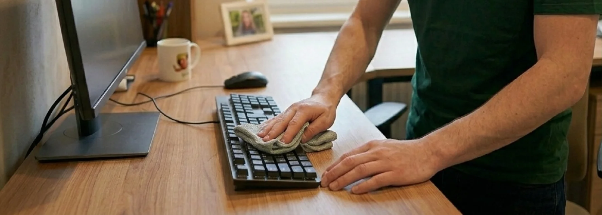

- Fréquence courante : 2 à 5 passages par semaine selon la taille de l'équipe
- Tarif indicatif : 35 à 60 CHF/heure sur le marché suisse romand
- Horaires flexibles : intervention avant l'ouverture ou après la fermeture
- 3 critères de choix : assurance RC Pro, discrétion, contrat clair
- Bénéfice direct : meilleure image client, équipes en meilleure santé, moins d'absentéisme
Pourquoi le nettoyage de bureaux est un vrai enjeu pour une entreprise
Des locaux propres ne sont pas qu'une question d'esthétique. C'est un facteur direct de productivité, de santé et d'image.
Trois raisons concrètes :
- L'image client : un bureau d'accueil sale ou des sanitaires négligés donnent une mauvaise première impression, même avant le premier mot échangé
- La santé des équipes : un environnement propre réduit la propagation des virus et donc l'absentéisme, notamment en période hivernale
- La concentration : un espace de travail ordonné et sain améliore le confort et la productivité au quotidien
Quelle fréquence de nettoyage pour vos bureaux ?
La fréquence dépend du nombre de collaborateurs, du passage de clients et du type d'activité. Voici les repères les plus courants.
Un nettoyage régulier de vos bureaux, sans contrainte
Équipe attitrée · Prix fixe garanti · Devis gratuit
Voir le service régulier →| Type d'entreprise | Fréquence recommandée | Prestations clés |
|---|---|---|
| Petit bureau (1-5 personnes) | 1 à 2x par semaine | Sols, sanitaires, poubelles, dépoussiérage |
| Bureau moyen (6-20 personnes) | 2 à 3x par semaine | + cuisine, salles de réunion, vitres internes |
| Grand open space (20+ personnes) | 4 à 5x par semaine | + désinfection quotidienne des zones communes |
| Cabinet médical / dentaire | Quotidien | Désinfection renforcée, protocole d'hygiène strict |
| Commerce / accueil public | Quotidien | Vitrines, sols à fort passage, sanitaires publics |
Les zones sensibles (sanitaires, cuisine, poignées de porte) demandent une attention quotidienne dès que l'équipe dépasse une dizaine de personnes.
Combien coûte le nettoyage de bureaux en Suisse romande ?
Le tarif dépend de la surface, de la fréquence et des prestations. Sur le marché suisse romand, deux modes de facturation existent.
| Mode de facturation | Fourchette indicative | Idéal pour |
|---|---|---|
| Tarif horaire | 35 – 60 CHF/heure | Petites surfaces, besoins ponctuels |
| Forfait mensuel | Sur devis selon m² et fréquence | Contrats réguliers, budget prévisible |
Ces fourchettes sont indicatives et varient selon la région, l'accessibilité des locaux et le niveau d'exigence. Un devis personnalisé reste indispensable.

Que comprend une prestation de nettoyage de bureaux ?
Une prestation complète couvre l'ensemble des espaces professionnels. Le détail type :
Postes de travail et bureaux
- Dépoussiérage des surfaces et du mobilier
- Nettoyage des écrans, claviers et téléphones (sur demande)
- Vidage des corbeilles et tri des déchets
Sanitaires
- Désinfection complète des WC et lavabos
- Réapprovisionnement (papier, savon) si convenu
- Détartrage régulier de la robinetterie
Cuisine et zones communes
- Nettoyage des plans de travail et de l'évier
- Entretien du micro-ondes et du réfrigérateur (sur demande)
- Désinfection des poignées et interrupteurs
Sols et vitres
- Aspiration et lavage des sols selon le revêtement
- Nettoyage des vitres intérieures
- Vitres extérieures selon un calendrier défini
Les 5 critères pour choisir une entreprise de nettoyage de bureaux
Tous les prestataires ne se valent pas. Voici les points à vérifier avant de signer.
- L'assurance RC professionnelle : indispensable en cas de dommage dans vos locaux. Demandez le nom de l'assureur.
- La discrétion et la confiance : l'équipe accède à vos locaux, parfois en dehors des heures de présence. La confidentialité est essentielle.
- La flexibilité des horaires : un bon prestataire intervient avant l'ouverture ou après la fermeture, sans perturber votre activité.
- Un contrat clair : prestations détaillées, fréquence, durée d'engagement et conditions de résiliation transparentes.
- Une équipe attitrée : la même équipe qui revient connaît vos locaux et vos exigences, ce qui garantit une qualité constante.
Faut-il privilégier une entreprise locale ?
Pour le nettoyage de bureaux, la proximité géographique présente des avantages concrets :
- Réactivité en cas de besoin urgent (réception client imprévue, dégât)
- Flexibilité pour ajuster les horaires ou la fréquence
- Relation de confiance sur la durée avec un interlocuteur unique
- Connaissance du tissu économique local et de ses spécificités
Une entreprise ancrée dans la Broye, le canton de Vaud ou Fribourg peut intervenir rapidement et s'adapter à l'évolution de vos besoins.
FAQ – Nettoyage de bureaux
À quelle fréquence faut-il nettoyer des bureaux ?
Cela dépend de la taille de l'équipe et du passage de clients. Un petit bureau peut se contenter de 1 à 2 passages par semaine, tandis qu'un open space de plus de 20 personnes nécessite 4 à 5 passages, avec une désinfection quotidienne des zones communes. Les cabinets médicaux et commerces ouverts au public demandent un nettoyage quotidien.
Le nettoyage de bureaux se fait-il pendant ou en dehors des heures de travail ?
La plupart des entreprises préfèrent une intervention en dehors des heures d'ouverture, tôt le matin ou en soirée, pour ne pas perturber l'activité. Un bon prestataire s'adapte à vos horaires, y compris le week-end si nécessaire.
Le matériel et les produits sont-ils fournis par l'entreprise de nettoyage ?
Oui, dans la grande majorité des cas, l'entreprise de nettoyage fournit son propre matériel et ses produits. Vérifiez ce point dans le contrat. Certaines entreprises proposent aussi des produits écologiques sur demande.
Quelle est la durée d'engagement pour un contrat de nettoyage de bureaux ?
Les contrats réguliers s'étendent souvent sur 12 mois, avec des conditions de résiliation définies à l'avance. Pour un premier essai, certaines entreprises acceptent une période test ou des interventions ponctuelles avant un engagement plus long.
Comment est calculé le prix d'un nettoyage de bureaux ?
Le tarif se base sur la surface en m², la fréquence des interventions et les prestations demandées. Deux modes existent : le tarif horaire (35 à 60 CHF/heure sur le marché suisse romand) ou le forfait mensuel, généralement plus avantageux pour un contrat régulier.
En résumé
Le nettoyage de bureaux est un investissement direct dans l'image, la santé et la productivité de votre entreprise. Le bon choix repose sur une fréquence adaptée à votre activité, un tarif transparent et un prestataire fiable, assuré et discret. Une entreprise locale offre en plus la réactivité et la flexibilité qui font la différence au quotidien.